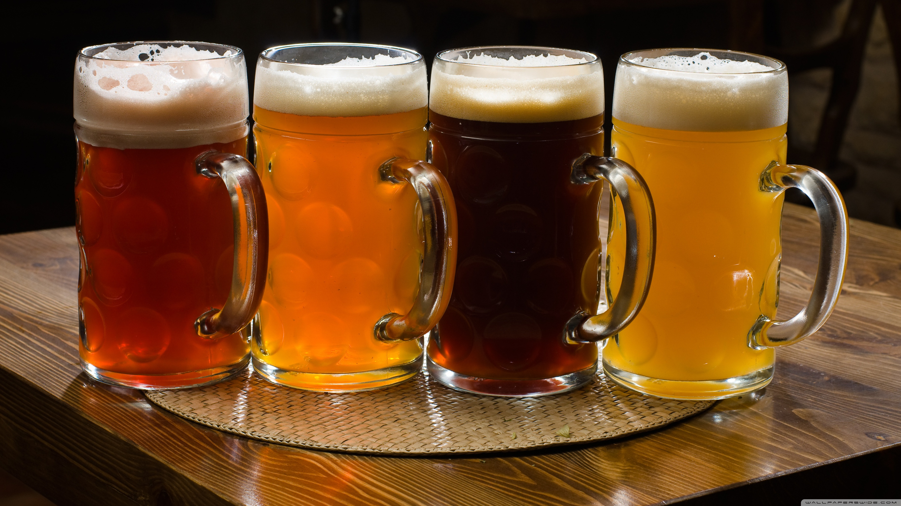

Alexander Keiths India Pale Ale
Alexander Keiths Premium White
Amstel Light
Becks
Blanche d Chambly
Blue
Blue Lime
Boddingtons Pub Ale
Brava
Brew free or die IPA
Bud Light
Bud Light Lime
Budweiser
Buzz Beer
Carib
Carib Pilsner
Carlsberg
Cheetah
Christoffel Nobel
Coors Light
Corona
Creemore Lager
Dos Equis
Dos Equis amber
Erdinger
Grolsch
Guinness
Harp
Haywire
Heidelberg Lager
Heineken
Hoegaarden
Hofbrau delicator
Humboldt brown
Innis & gunn oak aged ale
Kilkenny Cream Ale
Kingfisher
Kirin ichiban
Kiwi Lager
Kokanee
Kronenbourg 1664 Blanc
Kostritzer black lager
Leinenliugels summer shandy
Maclays
Mill Street Organic Lager
Mill Street Tankhouse Ale
Miller Chill Lime
Miller Genuine Draft
Miller High Life
Miller Light
Molsen Canadian
Moosehead
Newcastle beer
Octoberfest Lager
Okanagan Spring Pale Ale
Palm Beer
PC Cerveza
Premium ciuc
Red Baron
Red Baron Lime
Red Stripe
Rickards India Pale Ale
Rickards Red
Rickars White
Rolling Rock
Samuel Adams
Sapporo
Schneider Weisse
Shiner bock
Shock top
Sierra Nevada
Sleeman Honey Brown Lager
Sleeman LIght
Sleeman Original Draught
Sol
St-Ambroise Apricot Wheat Ale
Stag
Steam Whistle
Stella Artios
Stiegl lager
Stone Hammer Pilsner
Taj mahal
Tennents Lager
Tiger Beer
Triple karmeliet
Tuborg Pilsner
Waupoos Cider
Warsteiner Gold Lager
Warsteiner Dark
Waterloo Dark
Waterloo Wheat
Weihenstephaner
Weihenstephan vitus
Wellington County Ale
Widmer Hefeweisen
Woolwich arrow Harvest Ale
Woolwich Arrow House Draught
Yanjing
Yuengling